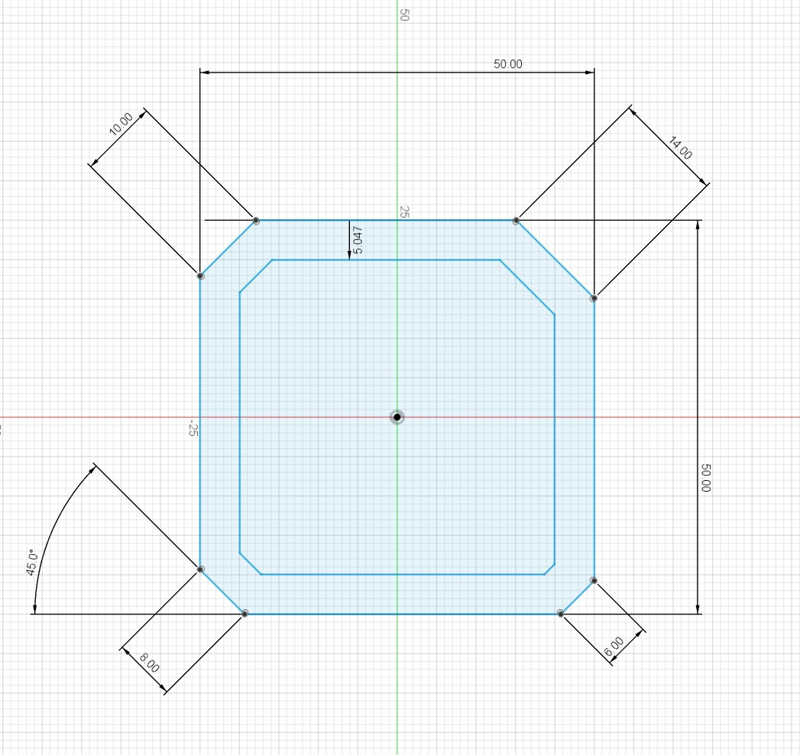
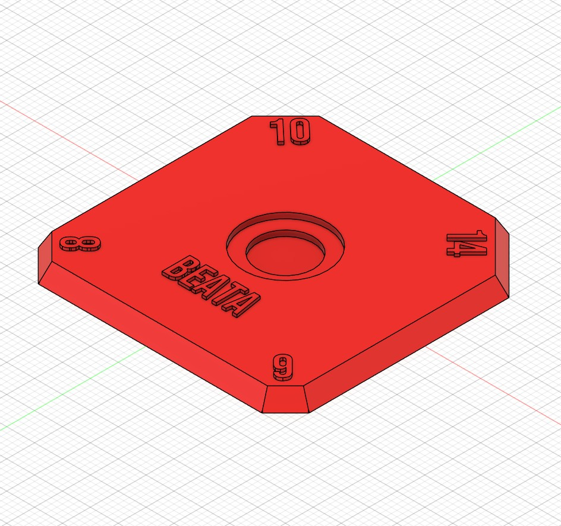

½ journée 02
Première approche de la conception 3D
En 01, tu as imprimé un objet conçu par quelqu'un d'autre. Cette fois, tu vas le dessiner toi-même. Nous allons modéliser un outil ensemble, étape par étape, et chacun le personnalisera à sa façon. À la fin, tu repars avec une pièce qui n'existe nulle part ailleurs : la tienne. Tu pourras la tester pendant ta formation de carreleur, ou simplement la garder.
Personne n'est censé savoir modéliser en arrivant. L'objectif est de voir ce que c'est, de se faire une idée — et de savoir si ça te plaît ou pas.
À la fin de cette demi-journée, tu seras capable de :
Autodesk Fusion est un logiciel de conception 3D professionnel, utilisé dans l'industrie comme par les makers. Il fonctionne avec le cloud : tes fichiers sont sauvegardés sur ton compte, tu les retrouves depuis n'importe quel ordinateur.
Les conditions évoluent régulièrement — vérifie sur le site officiel d'Autodesk. Si tu commences à vendre ce que tu produis, la licence personnelle ne suffit plus.
On dessine ensemble


Nous modélisons cette pièce ensemble, étape par étape. Tu suis à ton rythme, et tu lèves la main dès que tu décroches — c'est normal de décrocher, personne ne modélise du premier coup.
Les trois gestes de base que tu vas répéter :
| Geste | Ce que ça fait |
|---|---|
| L'esquisse | Dessiner un contour à plat, comme sur une feuille. |
| Les cotes | Donner les dimensions exactes au dessin. |
| L'extrusion | Transformer le dessin plat en volume. |
Tout le reste n'est qu'une répétition de ces trois gestes.
Rends-le tien
La pièce de base est la même pour tous. Ce que tu en fais ensuite t'appartient :
Exporte ton modèle au format STL ou 3MF, ouvre-le dans Bambu Studio, choisis la machine correspondant à ton filament, tranche et lance.
Tu connais déjà cette étape — la différence, c'est que cette fois le fichier vient de toi.